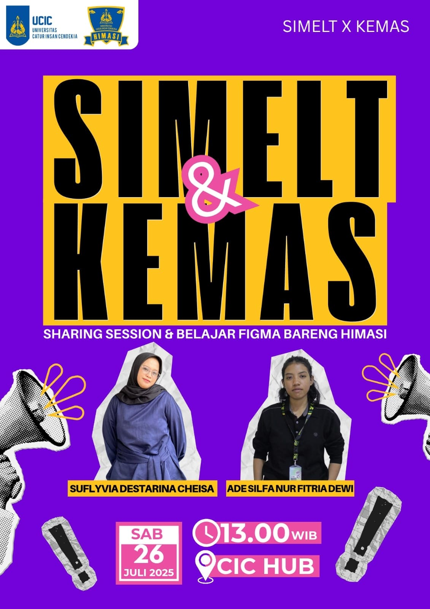

Program Kerja HIMASI
Daftar proyek dan inisiatif untuk kemajuan bersama.

MBKM Karyamulya
Selesai
Kegiatan sosial HIMASI untuk mendukung UMKM di Kelurahan Karyamulya, Kota Cirebon melalui program MBKM.
Tim:


Lihat Detail

Charity & Bukber SI
Selesai
Kegiatan sosial berbagi dan buka puasa bersama mahasiswa Sistem Informasi dan masyarakat sekitar melalui program HIMASI Care.
Tim:


Lihat Detail

SIBOOK (Sistem Informasi Membaca Buku)
Selesai
Platform digital untuk memudahkan mahasiswa dan dosen dalam melakukan pemesanan ruangan kelas dan fasilitas kampus secara online, meningkatkan efisiensi penggunaan sumber daya.
Tim:


Lihat Detail

SEDINA NING UCIC
Pengerjaan
Seminar nasional bertema Data Science dan teknologi terbaru, menghadirkan pembicara ahli dan memperluas jejaring mahasiswa Sistem Informasi.
Tim:


Lihat Detail

SIMELT (Sistem Informasi Mental Health)
Perencanaan
Program mentoring dan belajar bersama untuk mengenali diri sendiri dan menghadapi stress.
Tim:


Lihat Detail